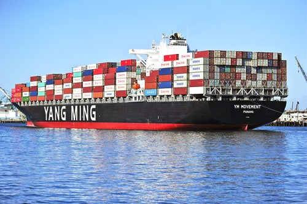
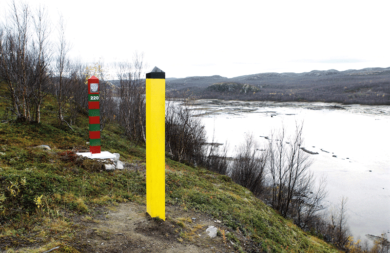

Arbeidserfaring

Yang Ming Marine Transport Corporation (09/2019 - nå)
- Jobber hovedsakelig med salg samt operasjonelt under
eksport/import (fjerne østen). Ansvarsområder inkluderer:
- Relasjonsbygging med speditører og andre kunder.
- Forhandling av spotrater på vegne av rederiet med
avskiper samt fremforhandling av langtidsavtaler.
- Kontinuerlig overvåking av fraktrater i Norge samt
regelmessig rapportering til rederiet.
- Maksimere plassbruk på alliansens linjer for å optimalisere
og fullt utnytte vår allokering.
- Overvåking og oppfølging av last fra Norge til Asia
gjennom tett samarbeid med operations i Europa og Asia.
- Ukentlig avregning av utestående fraktbeløp mellom
agenturet og rederiet samt arrangere betaling av dette.
- Forberedelse samt endring av Bill of Lading.
- Ved starten av pandemien: renoverte selskapets
eksportoperasjonsprodsedyre ved å digitalisere alle
bookingene i excel samt avregninger mellom agenturet og
rederiet da disse tidligere ble gjort på papir.
- Opprettholdt et relativt lønnsomt aktivitetsnivå under toppen av
Covid-19 restriksjonene i Asia og Europa.
Veiby Økonomi AS (01/2018 - 07/2018)
- Utførte bokføringsjobber: bilagsføring, avstemming av bank,
merverdiavgift og utarbeidet balansedokumentasjon.
- Jobbet primært med finans- og eiendomsselskaper.
- Opparbeidet meg verdifull kompetanse på kjøp og salg av
aksjer og verdipapirer i selskaper som handler på tvers av
landegrensene.
- Arbeidet med et selskap som jobbet med utvinning av
bitcoin, hvor jeg undersøkte de skattemessige
implikasjonene ved bokføring av inntekter fra utvinning og
salg av bitcoin.
CWCC Certified Public Accountants (01/2016 - 02/2016)
- Internship innen regnskap og finans på Fastlandskina hvor jeg
jobbet i et flernasjonalt selskap med en svært dynamisk
arbeidskultur.
- Arbeidsoppgaver inkluderer: Regnskapsoppgaver,
korrekturlesning av avtaler og regnskap, deltakelse på
nettverksarrangementer og kundemøter.
Utdanning
National Taiwan University (09/2018 - 05/2019)
- Mandarin Chinese – “Huayu Enrichment Scholarship Program”
- Studerte Kinesisk gjennom en stipendordning på Taiwan i ni
måneder.
- TOCFL Level B1

Deakin University (03/2015 - 10/2017)
- Bachelor of Commerce (B.Com.), Regnskap og Finans
- Nøkkelområder: Corporate Finance, International Finance and Investment,
Analytical Methods, Financial Accounting, Corporate Accounting
Andre erfaringer

Førstegangstjeneste - Hæren (01/2014 - 01/2015)
- Garnisonen i Sør-Varanger, Finnmark
- Overvåking og patruljering av den norsk-russiske grense.